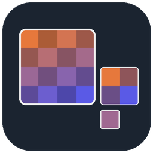

TGA Viewer & DDS, KTX Textures
TGA Viewer & DDS, KTX Textures, a VS Code extension by Zovo
Open TGA, DDS, KTX and KTX2 textures in a VS Code tab: click the file and the image shows, with its format, size and mip levels next to it. Works offline, with nothing to install. Made by Zovo.
Free, MIT license. Needs VS Code 1.75.0 or newer. Extension ID zovo.zovo-texture-viewer, version 0.1.0.

Free, with no account and no network calls:
- TGA files of every common kind: color-mapped, true-color and grayscale, raw or RLE, 8, 15, 16, 24 and 32 bits, any origin.
- DDS files: BC1 to BC7 (DXT1 to DXT5, ATI1, ATI2, BPTC, BC6H HDR), 8 to 128-bit uncompressed and float formats, cube maps, volume textures and texture arrays.
- KTX and KTX2 files: uncompressed, BC1 to BC7, ETC1, ETC2 and EAC, with zstd or zlib supercompression.
- Pickers for mip level, cube face, array layer and depth slice.
- Zoom from 1/32 to 64x, a texel grid from 8x, the RGBA and hex value under the cursor (and the real float value for HDR formats), double-click to copy it.
- Alpha on or off over a checker, black, gray or white background.
- A format panel: container, pixel format, sRGB or linear, size per mip level, GPU memory, KTX metadata.
Zovo Pro: USD 19 once, for the Pro tools in every Zovo extension. Each Pro tool has 3 free tries on your computer first:
- Convert and export: save the view, or every mip level, face and layer, as PNG; convert a folder of TGA, DDS and KTX textures to PNG, or PNG files to TGA, with a report.
- Channel tools and compare: R, G, B and A one by one, a lit normal-map view, and two textures side by side or as a difference image with the largest difference and PSNR.
- Texture audit: every texture in a folder with format, size, mips and GPU memory, warnings for non-power-of-two sizes and missing mip levels, saved as CSV or Markdown.
Questions people ask
Is TGA Viewer & DDS, KTX Textures free?
Yes. TGA Viewer & DDS, KTX Textures is free and MIT licensed.
How do I install TGA Viewer & DDS, KTX Textures?
Click "Install in VS Code" above, or search for zovo.zovo-texture-viewer in the Extensions view.
How to use it
- Click a
.tga,.dds,.ktxor.ktx2file in the Explorer. If another viewer opens it, right-click the file and choose Open in Texture Viewer, or use Open With. - To zoom, use Ctrl or Cmd + mouse wheel, the + and - buttons, or the keys
+,-,0(fit) and1(actual size). Drag to pan. - The Mip picker, or Page Up and Page Down, steps through the mip levels. Cube maps show a Face picker, arrays a Layer picker, volume textures a Slice picker.
Aturns alpha on and off,Gthe grid,Ithe format panel.- The Pro tools are in the Command Palette (Texture Viewer: ... (Pro)), in the Explorer right-click menu and in the small row at the end of the viewer toolbar. The row closes with its x for the rest of the session, and the setting
textureViewer.showProToolshides it for good.
What it reads
| Container | Formats |
|---|---|
| TGA | Types 1, 2, 3, 9, 10, 11. 8-bit color maps with 15, 16, 24 or 32-bit entries. 8, 15, 16, 24, 32-bit pixels. TGA 2.0 extension area (alpha type, software). |
| DDS | FourCC DXT1 to DXT5, ATI1, ATI2, BC4U, BC4S, BC5U, BC5S and the D3D float codes; DX10 header with BC1 to BC7, BC6H signed and unsigned, RGBA8, BGRA8, RGB10A2, R11G11B10F, RGB9E5, 16 and 32-bit float, R8, RG8, R16, 565, 5551, 4444; legacy bit masks, luminance, alpha-only and 8-bit palette files. |
| KTX 1.1 | The same block formats by OpenGL number, plus ETC1, ETC2, EAC; RGB rows padded to 4 bytes; big-endian files; the orientation key. |
| KTX 2.0 | The same by Vulkan number; zstd (needs an editor built on Node 22.15 or newer, such as current VS Code) and zlib supercompression; the data format descriptor (sRGB or linear) and the key/value metadata. |
ASTC, PVRTC and Basis Universal (ETC1S and UASTC) files open with their header, levels and metadata and a note that their pixels are not decoded in this version. HDR formats are shown clamped to 0 to 1 with no tone mapping; the bottom line shows the real values.
Privacy
The extension reads the file you open and nothing else. It makes no network calls, and nothing is uploaded or measured. The Pro tools write only the files you ask for. The links at the bottom of the viewer (Rate, More free tools, Zovo Pro) open a page only when you click them, and the setting textureViewer.showSupportLinks hides them.
Settings
| Setting | Default | What it does |
|---|---|---|
textureViewer.maxFileSizeMB | 512 | Larger files open with a message instead of the image. |
textureViewer.tgaRle | true | The PNG to TGA converter writes RLE-compressed TGA. |
textureViewer.showProTools | true | Shows the Pro tools in menus, the palette and the toolbar row. |
textureViewer.showSupportLinks | true | Shows the Rate, More free tools and Zovo Pro links. |
textureViewer.askForRating | true | Asks once for a rating after two good uses at least 30 minutes apart. |
Zovo Pro
One payment of USD 19 unlocks the Pro tools in every Zovo extension on your computers; a team of 5 is USD 59. The key works offline. Run Zovo Pro: Get Zovo Pro from the Command Palette, or click Get Zovo Pro in the toolbar row. The Zovo Pro tab lists this extension's Pro tools and your free tries before any payment page opens.
License
MIT. The BC1 to BC7 decoders are a port of a public-domain (CC0) file from the Pillow project; see THIRD-PARTY-NOTICES.md.
Guides
Install TGA Viewer & DDS, KTX Textures
Click the button to open VS Code and install it, or press Ctrl+P (Cmd+P on macOS) in VS Code and run ext install zovo.zovo-texture-viewer.
Free, MIT license. Needs VS Code 1.75.0 or newer. Extension ID zovo.zovo-texture-viewer, version 0.1.0.
Source code and issues are on GitHub.
Zovo Pro and support
Zovo Pro: USD 19 once, every Zovo viewer. It turns on the Pro tools in this extension and in the other Zovo extensions you use. The free features stay free.
After a card payment your license key shows on the next page. Paste it with the command "Zovo Pro: Enter a key".
You can also support the work with no Pro:
Need your format supported?
Open a format request with a sample file, and I reply there whether it can be done. For USD 299 once, through this GitHub Sponsors tier, I add your file format or a missing feature to this extension, with tests, within 7 days.